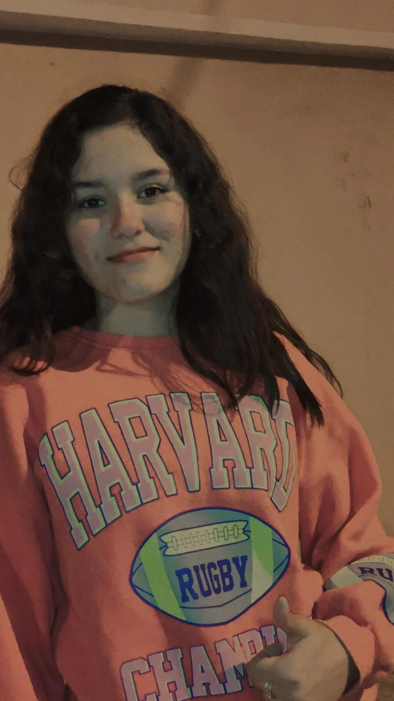
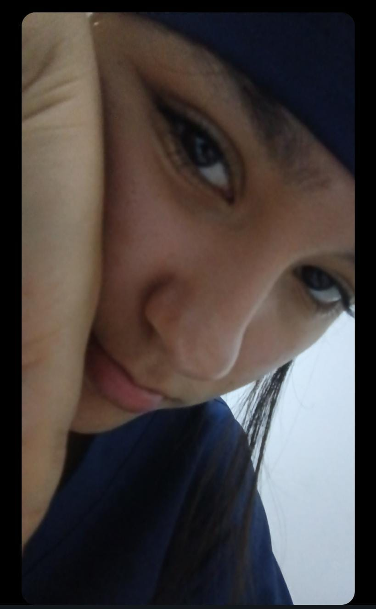
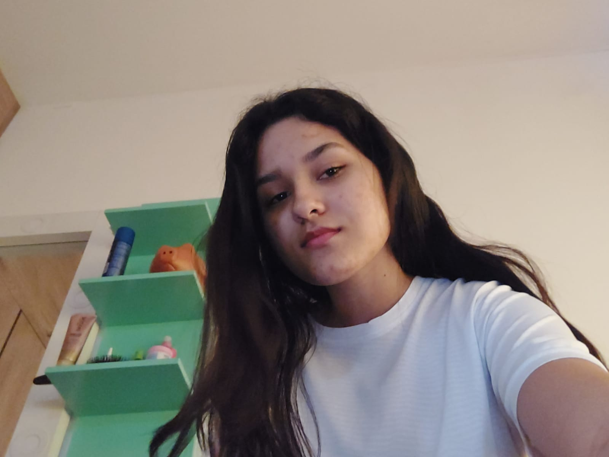
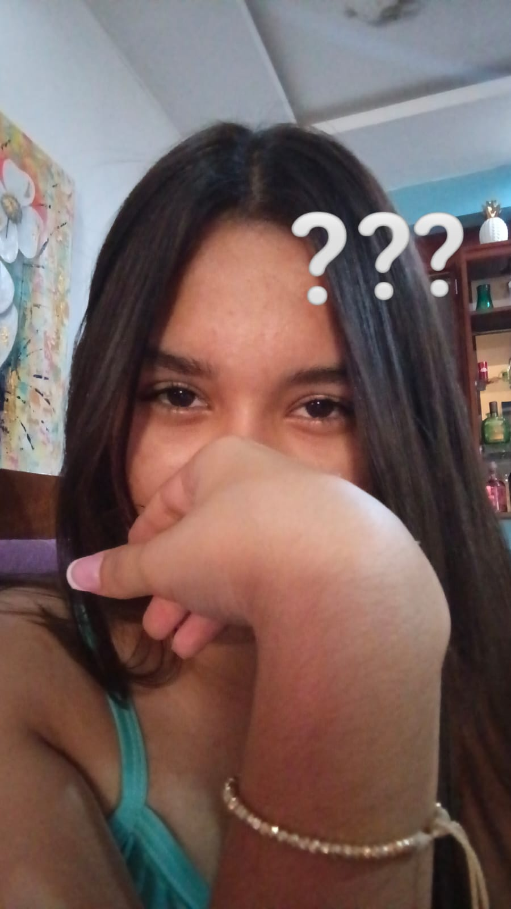

¡Bienvenida a Hogwarts, Sharik!
Se ha rumoreado que hoy es un día especial para una bruja muy talentosa. Para desbloquear tu regalo de cumpleaños, debes superar los retos de las cuatro Casas de Hogwarts.
Tu viaje comienza en Gryffindor. ¿Estás lista?
El Reto de Gryffindor
El coraje no es la ausencia de miedo, sino el triunfo sobre él. Responde la siguiente pregunta para demostrar tu valentía.
El Reto de Hufflepuff
Un espíritu leal y trabajador es la base de un buen mago. Demuestra tu dedicación y paciencia.
El Reto de Ravenclaw
La sabiduría y la sed de conocimiento son el camino hacia la grandeza. Demuestra tu ingenio.
El Reto de Slytherin
La ambición y la determinación son herramientas poderosas. ¿Puedes usar tu astucia para este desafío?
¡Mischief Managed! El Tesoro Oculto
Los secretos de la Sala de los Menesteres se han revelado. Elige tu camino, Sharik: ¿Deseas sumergirte en los recuerdos del Pensadero o abrir el Pergamino Mágico con tu regalo (JAJA es una cartita)?